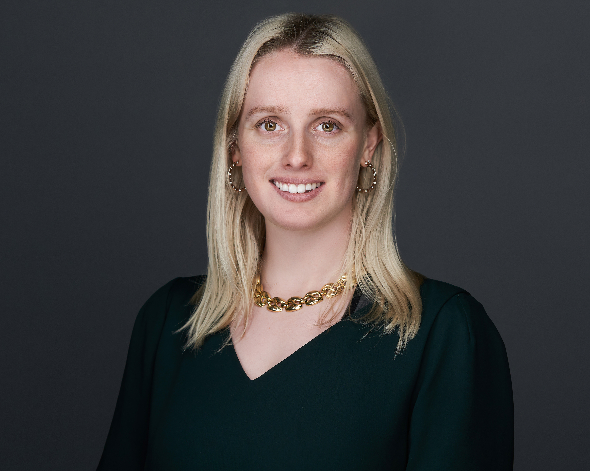

Kara Rodby

LinkedIn →Kara Rodby is the founder of Lost the Plot. Kara has spent the last 5 years as a Principal at a thematic venture capital firm - Volta Energy Technologies - with a
portfolio of largely early-stage, battery hard tech companies. At Volta, she supports the portfolio through board roles, executes technically-focused due diligence, and manages the firm's corporate relationships.
This has included operator stints within the portfolio, such as her recent position as NanoGraf's Chief Strategy Officer from January 2026 on. Before this, Kara received her BS from Northwestern University (2017) as well as both
an MS and a PhD in Chemical Engineering from the Massachusetts Institute of Technology (2022). At MIT, Kara's research and thesis focused on
techno-economic design of chemistries for redox flow batteries. Kara was named Forbes 30 Under 30 for Energy in 2024. In addition to her career in climate, Kara has
significant experience as an organizer and activist. Most notably, Kara was a lead organizer for the MIT Graduate Student Union, where she
helped the ~4k student bargaining unit organize for an election over a two-year period, which ended in a successful unionization vote. Kara is now merging those two worlds - her climate career and her unique experience
driving hard conversations and building movements - through her thought leadership on the state of the climate agenda and by convening this seminar series. She supports her community and promotes further movement building through two
nonprofit engagements as well, sitting on the boards of the Degrowth Institue (DGI) and the Payton Alumni Community & Endowment (PACE).